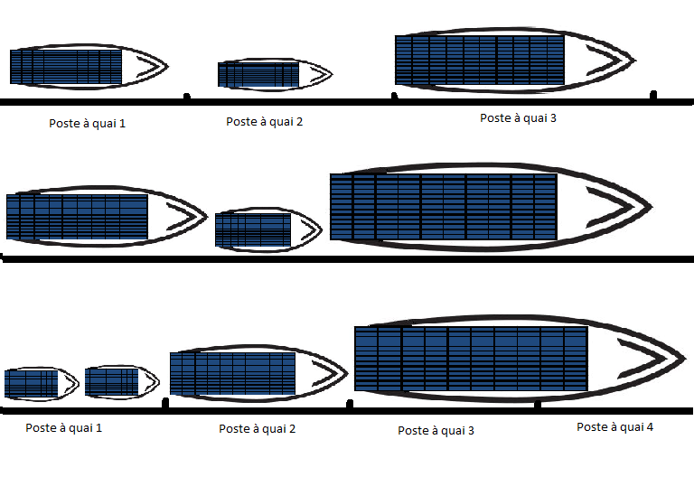
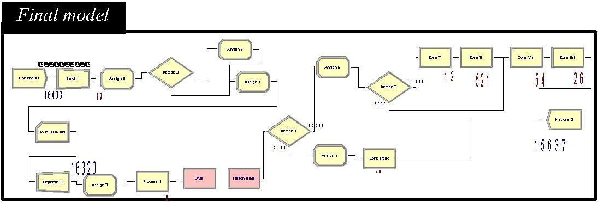

Le travail a commencé par le terrain : analyser les procédures existantes du port, puis les modéliser avec MERISE et UML avant d'écrire une ligne de code. Sur cette base, j'ai développé et intégré quatre modules Odoo : la gestion de la maintenance (GMAO), la facturation, l'exploitation et le commercial.
La GMAO couvre les équipements, la maintenance préventive et corrective, les pièces de rechange, la planification des interventions et leurs comptes rendus. Le projet s'est achevé par la formation des utilisateurs à la prise en main.
Les navires qui se présentent diffèrent par leur longueur et leur tirant d'eau : tous ne peuvent pas accoster partout. Mal répartis, ils attendent au large pendant qu'un quai reste sous-employé. L'étude cherche l'affectation des navires aux postes à quai, et leur ordre de passage, qui réduit cette attente.

J'ai formulé le problème comme un modèle mathématique à variables binaires — tel navire, à tel poste, à tel rang — dont l'objectif tient compte du temps de traitement, de l'attente depuis l'arrivée et de la distance entre le poste et les zones de stockage des conteneurs. Le modèle a été résolu avec OpenSolver sous Excel, vérifié sous LINGO, puis éprouvé par une simulation Arena alimentée par les statistiques réelles du terminal, d'août 2013 à mai 2016.

La solution d'allocation a été mise en œuvre par l'entreprise portuaire.
Une seconde étude porte sur le parc à conteneurs. L'espace y est compté, et un conteneur qui doit sortir ou passer à l'inspection ne doit pas se trouver enfoui sous les autres : chaque déplacement inutile coûte du temps de manutention. J'ai modélisé le choix des emplacements et programmé, avec un algorithme génétique, une application qui propose où stocker chaque conteneur et par quel chemin le déplacer.